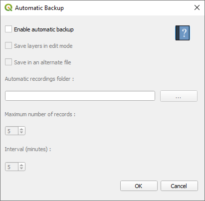

Automatic Backup plugin documentation¶
Presentation¶
This plugin allows you to create automatic backups of a Qgis project.
Several options are available to you:
Create a backup at an interval specified by the user. It will be located in the same directory as that of the project.
Save the layers being edited.
Save a certain number of backups, in a specific folder, still according to an interval.
How it works¶

Check only “Activate automatic backup” to create a backup in the same folder as that of the open project.
Then define how often you want to make backups with the “Interval” tool.
The backup will bear the name of the project with the extension “_backup”.
Checking the option “Save layers while editing” allows you to save your changes in the concerned layers.
If you check “Save in a separate file”, indicate the location and the maximum quantity of backups you want.
The backups created will bear the name of the project with an extension indicating their creation / modification date, in the format “Project Name” _backup_Year_month_day_hour_minute.
Example: “test_backup_2020_01_02_18_48.qgs”
{kind=link}
Source code¶
The source code is available at the following address: